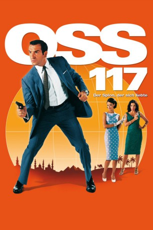

gesehen am 12.11.2015
gesehen am 12.11.2015Alternativ: OSS 117: Cairo, Nest of Spies (Englischer Titel) gesehen am 12.11.2015
 
 IMDB-Wertung: 7.1 / 10
IMDB-Wertung: 7.1 / 10  Metascore:
Metascore: 
Ägypten 1955: Kairo ist ein Schmelztiegel, in dem Geheimagenten aus aller Herren Länder unterwegs sind. Jeder spioniert gegen jeden, jeder sabotiert jeden: Franzosen, Engländer, Sowjets, die Familie des gestürzten Königs Farouk sowie islamische Extremisten. Um wieder Ordnung in das Chaos zu bringen und eine geheime Mission zu erfüllen, entsendet der französische Präsident seine ultimative Geheimwaffe, den Stolz des Geheimdienstes, den Helden Europas, in den Hexenkessel Nordafrikas: Hubert Bonisseur de La Bath, alias OSS 117!
Jahr: 2006
Dauer: 99 Minuten
FSK: 12
Land: Frankreich Studio: Koch MediaTonspuren:
Untertitel: Deutsch,
Auflösung: 1080p (1920x816) Größe: 7761 MB
Genre: Action, Abenteuer, Komödie, Krimi
Regisseur: Michel Hazanavicius
Drehbuch: Jean-François Halin, Jean Bruce, Jean-François Halin, Michel Hazanavicius
Soundtrack: Ludovic Bource, Kamel Ech-Cheik
Darsteller:
 Jean Dujardin als Hubert Bonisseur de La Bath, alias OSS 117
Jean Dujardin als Hubert Bonisseur de La Bath, alias OSS 117 François Damiens als Raymond Pelletier
François Damiens als Raymond Pelletier Richard Sammel als Moeller
Richard Sammel als Moeller Aure Atika als La princesse Al Tarouk
Aure Atika als La princesse Al Tarouk Bérénice Bejo als Larmina El Akmar Betouche
Bérénice Bejo als Larmina El Akmar BetoucheDatei: X:\2-Dilogie(N-Z)\OSS 117\OSS 117 - Der Spion, der sich liebte (2006, FSK12, 1920x816).mkv seit 06.11.2015
Festplatte: HD Collection-2(A-Z)-3(A-M)
 Alle Filme aus Gruppe '2-Dilogie(N-Z)\OSS 117'
Alle Filme aus Gruppe '2-Dilogie(N-Z)\OSS 117'